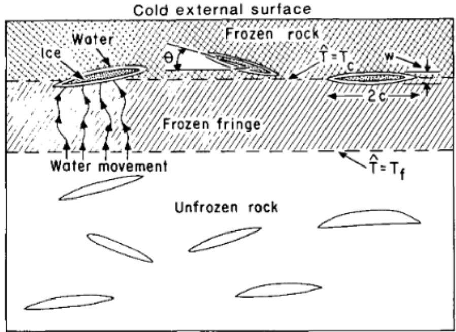
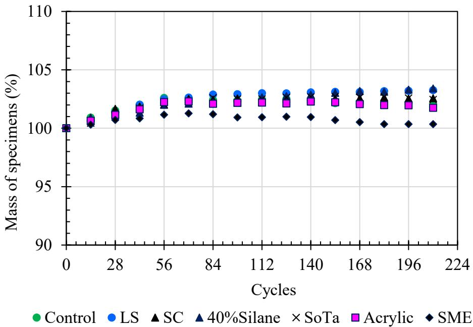
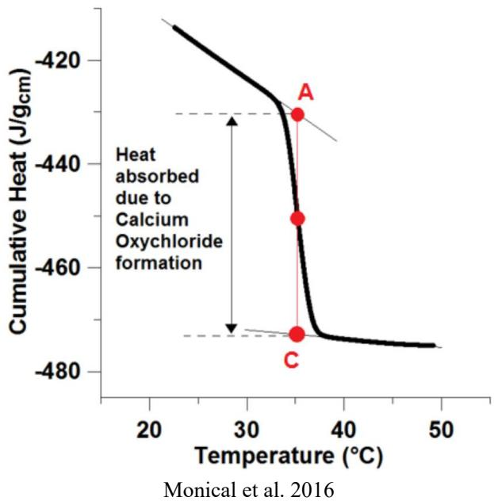
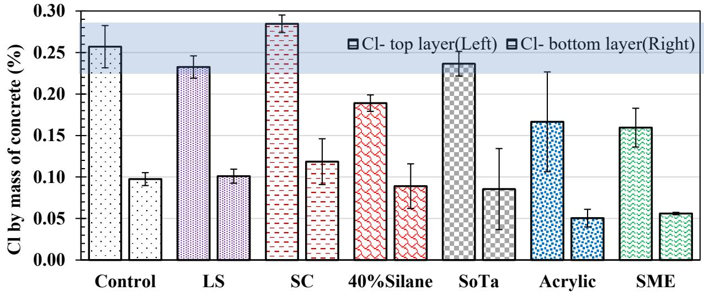
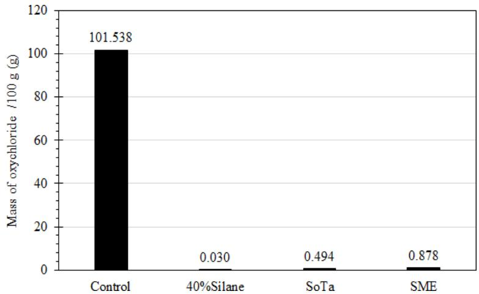
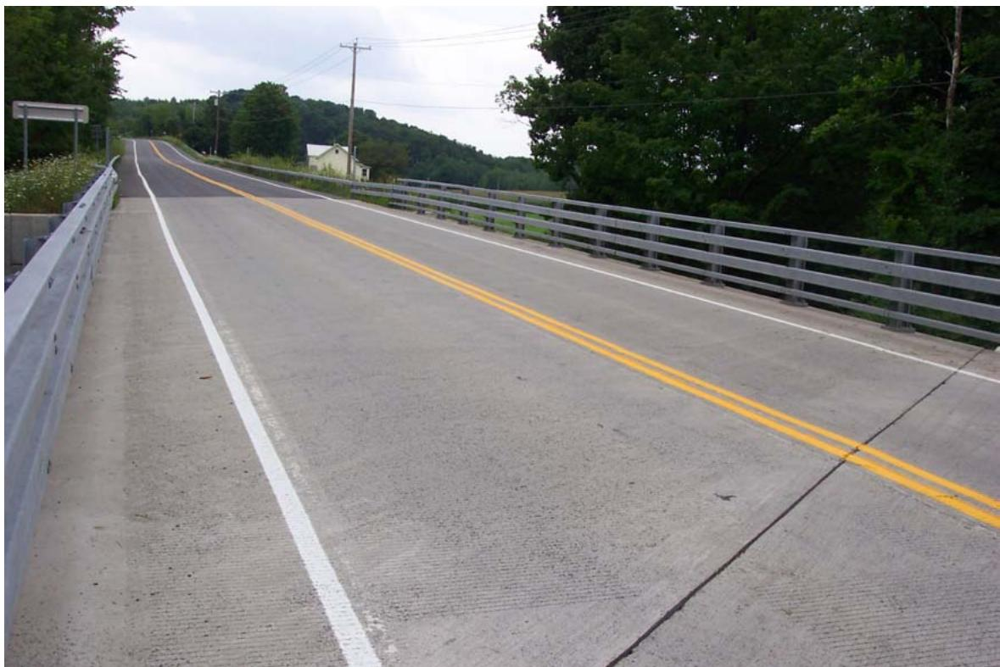

Deicing Salt Effects
Deicing Salt Effects represent a specific mechanism within Freeze-Thaw Durability, acting as the likely “tipping point” that explains the perceived increase in premature joint deterioration in concrete pavements. By altering fundamental fluid properties and transport mechanisms, deicing salts increase the osmotic pressure gradient between pore solution and external water, thereby elevating internal hydraulic pressures that exceed concrete tensile strength during freezing cycles [1]. This mechanism is supported by observations that one-dimensional freezing reduces scaling because slower rates allow more time for water to escape from capillaries into nearby air voids [2]. Additionally, the Washington Hydraulic Fracture test demonstrates that aggregate fracture occurs when pore structures cannot rapidly dissipate these internal pressures [7].
Sources (11)
Physical Effects on Pore Solution
- Increase surface tension and viscosity
- Decrease water activity (lower equilibrium relative humidity)
- Increase specific gravity
- Solutions maintain a higher degree of saturation due to hygroscopic nature
- Samples with salt do not begin drying until RH drops below equilibrium RH
The initial freezing and thawing point of a 3% NaCl solution occurs at approximately -3°C (26.5°F), which is marked by a slower rate of temperature change as water transitions between solid and liquid states. [2]
 Temperature cycles 3 mm (1/8 in.) above the surface of instrumented slab, immersed in salt solution (3% NaCl) [2]
Temperature cycles 3 mm (1/8 in.) above the surface of instrumented slab, immersed in salt solution (3% NaCl) [2]
Insulated slabs used to achieve one-dimensional freezing drastically reduce scaling because insulation lowers temperature gradients, which reduces crack formation in the ice layer. [2]
Silver nitrate staining reveals that salt solutions preferentially penetrate concrete through the interfacial transition zone (ITZ), creating visible white rings around aggregate particles. [1]
Sawn concrete surfaces exhibit significantly more distress than formed surfaces after 600 freezing-thawing cycles, indicating that surface preparation method influences deicing salt deterioration severity. [1]
The volumetric expansion of water upon freezing is not the primary driver of frost weathering; instead, ice segregation involving repulsive forces between an ice lens and porous medium creates a disjoining pressure that draws continuous fluid into pores under sustained subfreezing temperatures. [3]

Walder and Hallet 1985, Reproduced with permission of the Geological Society of America via Copyright Clearance Center Figure 1. Ice segregation mechanism [3]Fracturing in carbonate aggregates can occur at saturations below 65%, significantly lower than the 91% saturation threshold required for volumetric expansion to propagate cracks. [3]
Rapid fracturing occurs within a sustained critical temperature range of -3°C to -6°C, rather than in bursts each time temperatures fall below 0°C. [3]
The presence of deicing salts can cause a measurable increase in specimen weight during freeze-thaw cycles due to the pumping effect that pushes supercooled water into empty smaller pores. [4]

Specimen mass changes with F-T cycles [4]Effects on Transport
- Rate of absorption decreases with increasing salt concentration (proportional to square root of surface tension/viscosity ratio)
- Pore history matters — salts deposited during drying alter subsequent water ingress
- Non-linear moisture diffusion coefficient shifts to lower RH values
Higher water-to-cement (w/cm) ratios result in increased salt accumulation around aggregate particles and greater distress, yet these mixtures surprisingly perform slightly better in freeze-thaw testing, possibly due to consolidation difficulties associated with drier mixes. [1]
The secondary sorptivity of laboratory-cured latex-modified concrete specimens is significantly higher than that of conventional high-performance concrete, indicating altered moisture transport characteristics under deicing salt exposure. [5]
 Comparison between sorption behavior of substrate concrete core and LMC-VE core [5]
Comparison between sorption behavior of substrate concrete core and LMC-VE core [5]
Liquid deicing products such as Ossian Season One can improve concrete durability by slowing the initial and secondary water absorption rates, effectively creating an impermeable barrier at the surface that reduces internal saturation during freeze-thaw cycles. [6]
Chemical Effects
- Non-NaCl deicers (e.g., calcium chloride) cause chemical alteration of paste near joint faces
- Chemical attack characterized by carbonation, “bi-carbonation,” and leaching
Scaling resistance in slag-containing concrete mixtures is more sensitive to reductions in water-to-cement ratio (w/cm) than to achieving lower rapid chloride permeability values. [2]
Mixes with higher rates of carbonation exhibited some of the highest scaling levels, whereas mixes with high chloride penetration experienced almost no carbonation and performed well in terms of scaling. [2]
The presence of deicing salts exacerbates the potential for D-cracking in certain carbonate aggregates, such as limestone, dolomite, and chert. [7]
At approximately 40°F, a chemical reaction between magnesium or calcium chloride deicers and concrete produces expansive calcium oxychloride, which causes cracking in the paste and leads to joint deterioration. [8]

The drop associated with calcium oxychloride formation in cumulative heat curve [8]Using a 30 to 35 percent fly ash dosage can potentially reduce the percentage of calcium oxychloride formed by 50 percent. [8]
 Relationship between fly ash replacement dosage and oxychloride amount [8]
Relationship between fly ash replacement dosage and oxychloride amount [8]
Concrete mixtures containing gravel aggregates exhibit significantly more distress and higher susceptibility to cracks propagating around aggregate particles compared to limestone aggregates, primarily due to pop-outs from porous materials in the gravel. [1]
 Cracks concentrated adjacent to the coarse aggregate in FG1 [1]
Cracks concentrated adjacent to the coarse aggregate in FG1 [1]
Increasing silica fume content improves absorption and air permeability in high w/cm concrete with gravel aggregates, but no clear trend exists regarding scaling resistance as a function of silica fume dosage. [1]
Mixtures of calcite and dolomite (‘intermediates’) are detrimental because they break down in the presence of deicing salts, unlike pure limestones or dolostones. [3]
 Primary-to-secondary pore index ratio versus helium porosity [3]
Primary-to-secondary pore index ratio versus helium porosity [3]
Penetrating sealers can paradoxically worsen visual scaling ratings compared to untreated concrete, as the sealed surface layer may separate from the bulk material during freeze-thaw cycles. [4]
Silane and siloxane treatments can reduce chloride ingress in the top layer of concrete by 26% to 36%, while also significantly reducing potential calcium oxychloride formation. [4]

Chloride content percentage results [4]Acrylic sealers are less effective at reducing potential calcium oxychloride formation compared to other sealer types, despite their role as pore blockers. [4]

Scaling and visual rating of specimens after 140 F-T cycles [4]The formation of brucite in concrete pores can densify the mortar and reduce chloride ingress, although this chemical interaction occurs alongside physical stress amplification from salt solutions. [4]
Low-temperature differential scanning calorimetry (LT-DSC) serves as a screening tool to quantify the heat associated with calcium oxychloride formation, allowing optimization of cementitious compositions to minimize expansive compound generation. [9]
The Iowa Pore Index Test screens for D-cracking susceptibility in calcareous aggregates by combining chemical testing with pressure-driven water absorption measurements to identify aggregates that retain critical saturation levels. [9]
Latex-modified concrete overlays exhibit low freeze-thaw resistance when exposed to deicer chemicals due to chemical reactions among the cement, latex, and citric acid components that create an improper pore structure. [5]
 Deterioration of LMC-VE-only (middle column) and LMC-VE-overlaid (right column) test specimens due to freeze-thaw cycles (left column) [5]
Deterioration of LMC-VE-only (middle column) and LMC-VE-overlaid (right column) test specimens due to freeze-thaw cycles (left column) [5]
Field Scaling Study (Schlorholtz & Hooton 2008)
A pooled-fund field study of 28 sites across 6 states evaluated whether slag cement increases surface scaling from deicer salt exposure. Laboratory scaling tests (ASTM C 672 with 4% CaCl₂) on field cores found that only 1 of 10 sites exceeded the 1.5 lb/yd² mass loss threshold. The key finding was that construction-related issues (retempering, elevated w/cm) played a larger role in scaling than slag content. [10]
 Example of retempering noted via petrographic examination [10]
Example of retempering noted via petrographic examination [10]
Bridge deck cores consistently exhibited greater mass loss during scaling tests compared to pavement cores, indicating that structural application type influences deicer salt deterioration severity. [10]

Overview of Route 351 bridge over the Quackenkill [10]The diffusion coefficients estimated for various concrete samples ranged from approximately 5.6E-12 m²/s to 1.4E-13 m²/s, quantifying the transport properties affected by deicer salt exposure. [10]
Scaling specimens were prepared by cutting transversely through the core to a nominal thickness of 3 inches, creating an effective test area of either 12 in² or 18 in² depending on the core diameter. [10]
To pond deicer solution on the top surface of cores, the sides were sealed with a bituminous membrane and a plastic cylinder mold berm was secured using silicone sealant. [10]
The test solution consisted of approximately 0.25 inches of 4% calcium chloride applied under a single daily cycle of freezing for roughly 16 hours and thawing for approximately 8 hours. [10]
The test solution was changed every five cycles to maintain consistent chemical exposure conditions during the scaling evaluation. [10]
Phase 2 Laboratory Study (Hooton & Vassilev 2012)
A follow-up laboratory study investigated the effect of deicer solution concentration on scaling test results. Key findings:
- Solution concentration matters: ASTM C672 uses 4% CaCl₂ while BNQ uses 3% NaCl. The 3% NaCl concentration is near the pessimum concentration (most aggressive) for scaling, while the 4% CaCl₂ forms weaker ice bonds that transfer less stress to the concrete surface during freezing [2]
- Ice bond mechanics: NaCl solution forms a stiffer ice layer than CaCl₂, transferring higher stress to the concrete surface as the ice cracks — resulting in smaller flakes (<5 mm) for 3% NaCl vs. larger flakes (~15 mm) for 4% CaCl₂
- Pre-saturation with salt solution reduces osmotic effects and improves test correlation with field performance — incorporated into proposed ASTM WK 9367
- VDOT accelerated curing (submerged in lime water at 38°C) increased saturation, making concrete more vulnerable to deicer scaling — mitigated by adding a 14-day drying period [2]
Phase 3 Repeatability Findings (Taylor & Wang 2014)
Phase 3 repeated the Phase 2 scaling tests at Iowa State University to evaluate inter-lab reproducibility. Key findings on deicer solution effects: [11]
- Solution type consistency: ASTM C 672 used 4% CaCl₂; new method used 3% NaCl — consistent with Phase 2 protocol
- Similar trends observed between labs, but absolute mass loss values differed significantly — procedural differences (curing duration, drying step) had a larger effect than solution chemistry
- Inter-lab correlation was not as good as desired, suggesting that deicer solution effects interact with specimen preparation conditions in ways that are lab-specific
Liquid Deicer Performance
Exposure to liquid deicing agents like Ossian Season One during freeze-thaw cycling does not cause surface scaling or compressive strength loss, performing equivalently to plain water curing and significantly better than traditional chloride-based solutions. [6]
 Surface scaling after 50 freezing-thawing cycles: a) plain water, b) 3% sodium chloride, c) 4% calcium chloride, d) Ossian Season One [6]
Surface scaling after 50 freezing-thawing cycles: a) plain water, b) 3% sodium chloride, c) 4% calcium chloride, d) Ossian Season One [6]
Related Concepts
- Premature Joint Deterioration
- Freeze-Thaw Durability
- Interfacial Transition Zone
- Ettringite Fill
- Retempering
Connections to Test Methods
- ASTM C672 Scaling Test — uses 4% CaCl₂, brush finishing, no pre-saturation
- BNQ Scaling Test — uses 3% NaCl, wood screed finishing, 7-day pre-saturation
- VDOT Accelerated Curing — submerged curing increases saturation vulnerability
References
- P. Taylor, L. Sutter, and J. Weiss, "Investigation of Deterioration of Joints in Concrete Pavements," National Concrete Pavement Technology Center, Ames, IA, Rep. TPF-5(224), 2012. [Online]. Available: https://www.intrans.iastate.edu/wp-content/uploads/2018/03/joint_deterioration_penetrating_sealers_field_study_w_cvr.pdf
- R. D. Hooton and D. Vassilev, "Deicer Scaling Resistance of Concrete Mixtures Containing Slag Cement, Phase 2," National Concrete Pavement Technology Center, Ames, IA, Rep. TPF-5(100), 2012. [Online]. Available: https://www.intrans.iastate.edu/research/completed/deicer-scaling-resistance-of-concrete-pavements-bridge-decks-and-other-structures-containing-slag-cement-phase-2-evaluation-of-different-laboratory-scaling-test-methods/
- F. Hasiuk, M. F. A. Ridzuan, and P. Taylor, "Calibrating the Iowa Pore Index with Mercury Intrusion Porosimetry and Petrography," Institute for Transportation, Ames, IA, Rep. InTrans Project 15-553, 2017. [Online]. Available: https://www.intrans.iastate.edu/wp-content/uploads/2018/03/Iowa_pore_index_calibration_w_cvr.pdf
- J. T. Kevern, G. Adil, P. Taylor, S. Sadati, and K. Wang, "Evaluation of Penetrating Sealers for Concrete," National Concrete Pavement Technology Center, Iowa State University, Ames, IA, Rep. TR-765, 2022. [Online]. Available: https://www.intrans.iastate.edu/wp-content/uploads/2022/06/concrete_penetrating_sealers_eval_w_cvr.pdf
- K. Wang, B. M. Shankaramurthy, A. Anand, Y. Sargam, K. Freeseman, and B. Phares, "Performance Evaluation of Very Early Strength Latex-Modified Concrete (LMC-VE) Overlay," Institute for Transportation, Iowa State University, Ames, IA, Rep. TR-771, 2024. [Online]. Available: https://bec.iastate.edu/wp-content/uploads/2024/10/performance_evaluation_of_LMC-VE_overlay_w_cvr.pdf
- F. Bektas, J. Cao, and P. Taylor, "De-Icing Agent Performance Evaluation," National Concrete Pavement Technology Center, Ames, IA, 2013. [Online]. Available: https://www.intrans.iastate.edu/wp-content/uploads/2018/03/deicing_agent_perf_eval_w_cvr.pdf
- F. Bektas, W. Cai, and K. Wang, "Aggregate Freezing-Thawing Performance Using the Iowa Pore Index," Center for Transportation Research and Education, Ames, IA, 2016. [Online]. Available: https://www.cptechcenter.org/wp-content/uploads/2018/03/aggregate_freezing-thawing_using_Iowa_pore_index_w_cvr.pdf
- X. Wang, P. Taylor, and D. King, "Evaluation of Modified Concrete Mixture Proportions for the City of West Des Moines," National Concrete Pavement Technology Center, Ames, IA, 2016. [Online]. Available: https://www.intrans.iastate.edu/wp-content/uploads/2018/03/WDM_modified_concrete_mixture_proportions_w_cvr.pdf
- J. Gross, J. Weiss, T. Ley, P. Taylor, N. Weitzel, T. Van Dam, G. Smith, and C. Jones, "Performance-Engineered Concrete Paving Mixtures," National Concrete Pavement Technology Center, Iowa State University, Ames, IA, Rep. TPF-5(368), 2022. [Online]. Available: https://www.intrans.iastate.edu/wp-content/uploads/2023/04/performance-engineered_concrete_paving_mixtures_w_cvr.pdf
- S. Schlorholtz and R. D. Hooton, "Deicer Scaling Resistance ... Containing Slag Cement, Phase 1: Site Selection and Analysis of Field Cores," National Concrete Pavement Technology Center, Ames, IA, Rep. TPF-5(100), 2008. [Online]. Available: https://www.cptechcenter.org/wp-content/uploads/2018/03/schlorholtz_deicing_phase1.pdf
- P. Taylor and X. Wang, "Deicer Scaling Resistance of Concrete Mixtures Containing Slag Cement, Phase 3," National Concrete Pavement Technology Center, Ames, IA, Rep. TPF-5(100), 2014. [Online]. Available: https://www.intrans.iastate.edu/wp-content/uploads/2018/03/deicer_scaling_w_cvr.pdf
Feedback on this page